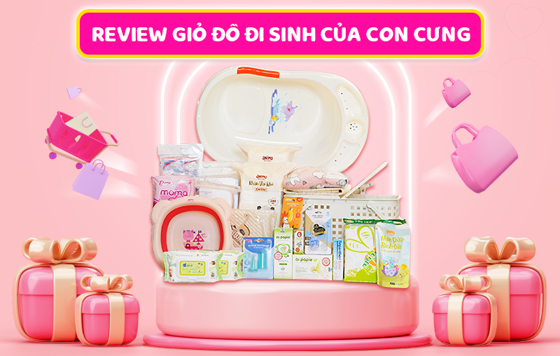

04:12PM - Thứ Ba | 31-10-2023
290
Trên thị trường hiện nay, giỏ đồ đi sinh cho mẹ và bé không có quá nhiều sự lựa chọn. Nổi bật nhất về chất lượng phải kể đến combo đi sinh Gọn và đi sinh Nhanh của Con Cưng. Mời ba mẹ cùng tìm hiểu xem 2 combo đi sinh này có những món đồ gì, liệu có đầy đủ không và giá bao nhiêu trong bài viết dưới đây nhé!

15+ món đồ cho mẹ và bé có trong giỏ đồ đi sinh của Con Cưng
Combo đi sinh Gọn và Nhanh của Con Cưng được thiết kế đầy đủ các món đồ cần thiết cho mẹ và bé trong quá trình vượt cạn và vài ngày sau sinh. Tất cả các món đồ đều đến từ thương hiệu uy tín để đảm bảo sức khỏe cho mẹ và bé. Chi tiết các món đồ có trong combo đi sinh của Con Cưng được liệt kê dưới đây.
Đồ dùng cho mẹ có trong giỏ đồ đi sinh của Con Cưng
Với hơn 12 năm kinh nghiệm kinh doanh trong lĩnh vực mẹ bầu và em bé, Con Cưng hiểu rất rõ nhu cầu của mẹ bầu trong ngày vượt cạn và những ngày sau sinh. Từ hiểu biết này, Con Cưng đã thiết kế combo đi sinh Nhanh và combo đi sinh Gọn. Cả 2 combo đi sinh này đều chứa đầy đủ các món đồ cần thiết cho cả mẹ và bé.
Ở nội dung dưới đây, Con Cưng sẽ liệt kê cho mẹ biết các món đồ dành cho mẹ có trong 2 combo này nhé! Mẹ cũng lưu ý nha, danh sách các món đồ dành cho mẹ trong combo đi sinh Nhanh và combo đi sinh Gọn đều giống nhau.
Đồ dùng cho bé có trong giỏ đồ đi sinh của Con Cưng
Không như đồ dùng cho mẹ, đồ dùng cho bé trong 2 combo đi sinh Nhanh và Gọn sẽ có đôi chút khác nhau. Ba mẹ hãy cùng tham khảo xem các món đồ cho bé trong từng giỏ đồ đi sinh để biết nên chọn combo nào nhé!
Bảng giá giỏ đồ đi sinh của Con Cưng
Hiện combo đi sinh Nhanh và combo đi sinh Gọn đang được bán tại chuỗi +700 cửa hàng mẹ và bé Con Cưng trên toàn quốc. Giá bán của combo đi sinh Gọn là 1.480.000 đồng và của combo đi sinh Nhanh là 2.480.000 đồng.
Ba mẹ có thể tìm mua combo đi sinh Nhanh và combo đi sinh Gọn tại cửa hàng Con Cưng gần nhà hoặc đặt online qua app Con Cưng/ website concung.com để được giao hàng tận nơi. Nếu có thêm bất kỳ thắc mắc nào cần được giải đáp, ba mẹ đừng ngần ngại gọi tới hotline 1800 6609 (miễn phí) để được Con Cưng hỗ trợ nhanh nhất nhé. Chúc mẹ “vượt cạn” thành công!